Boost Magento Perfomance with Queues
Simple Scenario
Complex Scenario
Have we reached the real limit?
No!
Queueing several syncrounous tasks allows us to go further.
Separation of components with Queue Manager & Workers
- Queue Manager: collects & assigns tasks to workers
- Workers: execute tasks (with repeat-until logic)
Response time improvments
Save 30% of the time by queuing index update on product save
Magento CE v. 1.8.1.0 with sample data. Index update on save enabled. Data collected with Xhprof profiler.
Online Hackathon Worldwide Experience
www.mage-hackathon.de/passed/online-hackathon-worldwide-31st-jan-1st-feb.html-
Lilmuckers_Queue
(github.com/lilmuckers/magento-lilmuckers_queue) -
Beanstalk
(kr.github.io/beanstalkd) - Your custom logic
Which queue manager to use?
The ones we can easly integrate with Magento are:
- Beanstalk (kr.github.io/beanstalkd)
- Amazon SQS (aws.amazon.com/sqs)
- Gearman (gearman.org)
Lilmuckers_Queue Extension
Defining a Queue Backend (for example Beanstalk)
<?xml version="1.0"?>
<config>
<global>
...
<queue>
<backend>beanstalkd</backend>
<beanstalkd>
<servers>
<server>
<host>127.0.0.1</host>
</server>
</servers>
</beanstalkd>
</queue>
...
</global>
</config>
Lilmuckers_Queue Extension
Defining a Queue
<?xml version="1.0"?>
<config>
...
<queues>
<queueName>
<label>The Queue Name</label>
<class>module/queueHandler</class>
<workers>
<taskName>
<class>module/worker</class>
<method>methodName</method>
</taskName>
</workers>
</queueName>
</queues>
...
</config>
Lilmuckers_Queue Extension
Adding tasks to Queue
$_queue = Mage::helper('lilqueue')->getQueue('queueName');
$_task = Mage::helper('lilqueue')->createTask(
'taskName',
array('data'=>'to provide', 'to'=>'the worker'),
$storeToRunAs
);
// Optionally
$_task->setPriority(100)
->setDelay(60)
->setTtr(60);
$_queue->addTask($_task);
Lilmuckers_Queue Extension
Worker
class My_Module_Model_Worker extends Lilmuckers_Queue_Model_Worker_Abstract
{
public function methodName(Lilmuckers_Queue_Model_Queue_Task $task)
{
//get the store assigned with the task
$store = $task->getStore();
//get the queue handler for this queue
$queue = $task->getQueue();
//get the data assigned with the task
$data = $task->getData();
//This task ended properly
$task->success();
//this task needs to be repeated
$task->retry();
//this task errored and we should drop it from the queue
$task->hold();
//this worker is taking a long time, we should extend it
$task->touch();
}
}
$ php /path/to/magento/shell/queue.php --watch <queues>
Queueing Magento Index Update
Open source code on GitHub
github.com/webgriffe/index-queue-extension

Webgriffe_IndexQueue Extension
Architecture
The same can be done with other components or tasks
Queues are for…
- Entity index update
- Cache cleaning
- Rendering email templates
- …
- Any task which the user doesn't need to wait for